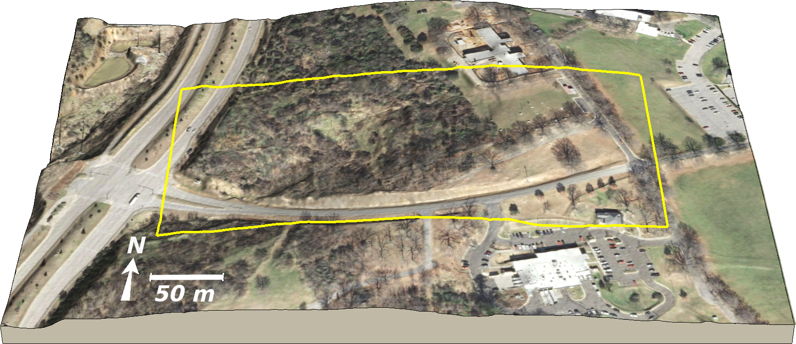
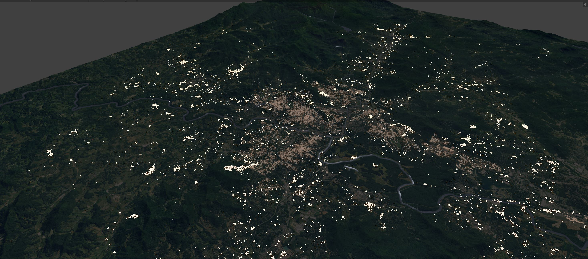
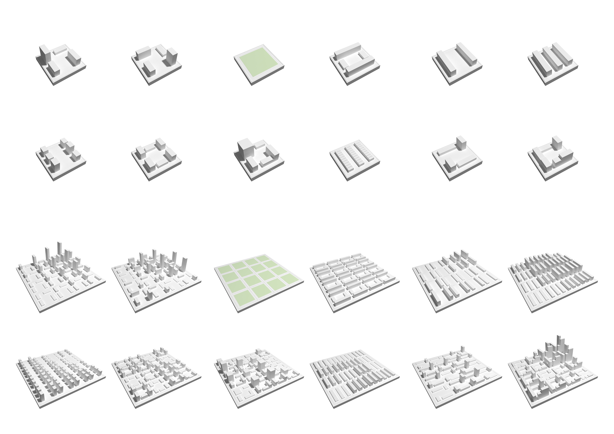
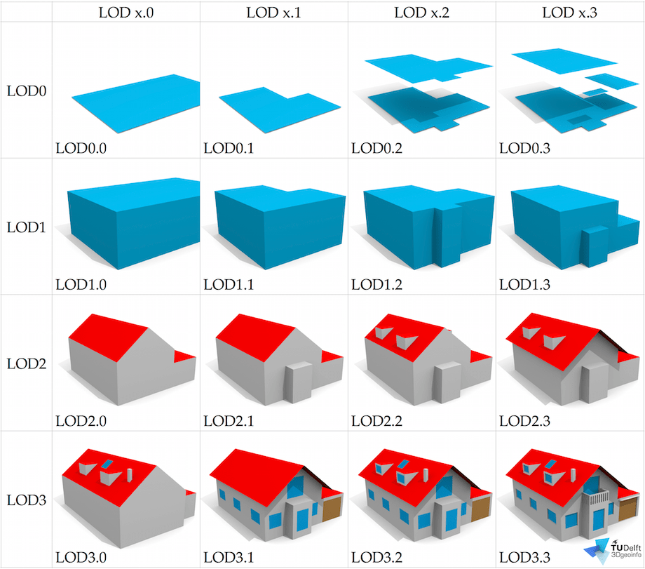

USIALE 2017
3D Visualization of Landscape Change Scenarios with Real-time Tangible Interaction
Payam Tabrizian, Anna Petrasova, Vaclav Petras, Helena Mitasova
and Ross K. Meentemeyer


Tangible Interaction
Realtime 3D rendering and immersion
Scale

In-situ view of inundated area Surface inundation and flow model
Interdiciplinary collaboration
Source: Pinsdaddy.com
Participation
Source: NC State design
Aesthetics and preferences
Landscape rendering produced by Tangible landscape
How it works ?
- Real-time updating a georeferenced 3D model of the landscape based on user interaction with Tangible Landscape
- Updating the attributes (shape, position) of 3D objects (e.g., plants) and surfaces (e.g., terrain) with their corresponding tangible objects
- Enabling user to control the viewpoints (camera position) and animation (e.g., walkthrough, flythrough)

| surface
| points
| lines
| areas
| areas
|
Hardware setup

Blender

- 3D modeling, rendering, animation, physics, and game engine
- Free and open source, easy scripting in Python
- GIS and VR plugins
- Real-time raytraced rendering
Software Architecture

Landform and water

Patches

Linear features

Cameras

Immersion
Landscape Design scenarios

Dorothea Dix site

Changing landform and hydrology

Exploring views from the park site entrances

Planting trees and siting the shelter

Designing the trail and exploring views

Evaluation of design scenarios
Simulation of urban growth scenarios with FUTURES model
Meentemeyer, et al. (2013), FUTURES: multilevel simulations of emerging urban–rural landscape structure using a stochastic patch-growing algorithm.

Rendering of the FUTURES simulation

Night-time rendering of the FUTURES simulation
Road map

User defined or simulated layout and typology
Source: a-project
Road map

Level of Detail management (LOD)
Source: Biljecki et al.(2016)
Road map
Enhanced textures
Rendering of large portions of New york made in Blender using open street map data Source: Biljecki et al.(2016)
Resources


{kind=link}